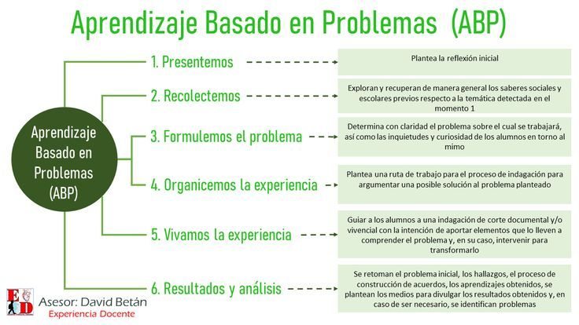

Aprendizaje en el Servicio
Origen, precursor e historia
| El aprendizaje en el servicio combina la educación académica con el servicio a la comunidad, inspirado por los movimientos de educación cívica y ciudadana. Este enfoque busca que los estudiantes se involucren en actividades que beneficien a la comunidad, desarrollando un sentido de responsabilidad social. |
 |
Componentes para la planificación y evaluación
| La planificación requiere identificar necesidades en la comunidad que los estudiantes puedan atender. Los objetivos se relacionan con el aprendizaje académico y el servicio, y la evaluación considera tanto el impacto en la comunidad como el aprendizaje y la reflexión de los estudiantes. |
 |
Roles del docente y del alumno
| El docente facilita la conexión entre el contenido académico y la práctica social. Los estudiantes son participantes activos, involucrándose en la comunidad y aplicando lo aprendido en un contexto real. |
 |
Materiales, espacios y otros recursos
| Los materiales y recursos dependerán del servicio que se esté realizando y pueden incluir desde herramientas prácticas hasta materiales de comunicación y difusión. Los espacios incluyen tanto el aula como la comunidad. |
 |
Formas de interacción
| La interacción en el aprendizaje en el servicio es tanto interna como externa, ya que los estudiantes colaboran entre ellos y con miembros de la comunidad. La reflexión compartida sobre el impacto de sus acciones es fundamental para conectar el aprendizaje con la experiencia de servicio. |
 |
Consulte otras metodologías de aprendizaje o regrese al menú
Menú
Aprendizaje Basado en Proyectos Comunitarios
Aprendizaje Basado en Indagación
Aprendizaje Basado en Problemas